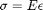
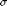
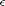
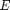
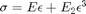
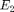
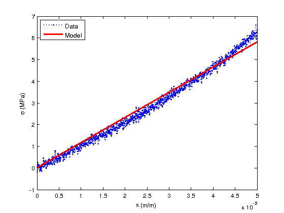
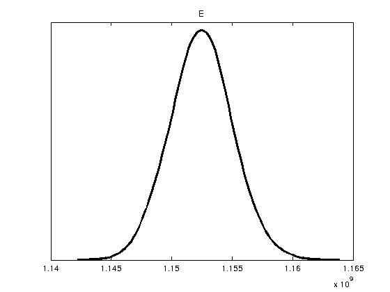
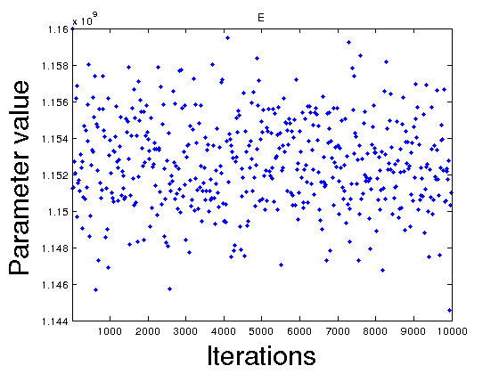
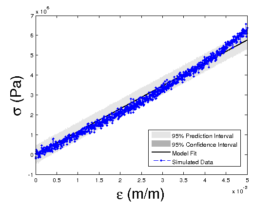

clear all %%%%%%%%%%%%%%%%%%%%%%%%%%%%%%%%%%%%%%%%%%%%%%%%%%%%%%%%%%%%%%%%%%%%%%%%%%%
The following code analyzes fictitious data for a stress-strain curve of a quasi-linear elastic material. The linear stress model is

where

is the stress,
is the strain, and
is the modulus. For the nonlinear case, we consider third order dependence on the strain and introduce a second elastic parameter
where

is the higher order elastic parameter. This model requires uncommenting lines of code with ***NONLINEAR****** commented at the end of the line. Also note that there are two additional lines in the function "elastic_model_Bayesian.m" that must also be uncommented to run the nonlinear case.The first few commented lines of code below can be uncommented and re-ran to create different fictitious stress data given a set of strain data. Currently the stress model includes weak third order dependence on strain. It also includes Gaussian noise super-imposed on the nominal stress "data". The second key part of the code creates a Matlab structure called 'data' that contains the 'xdata' (strain) and 'ydata' (fictitious measurement stress) to be compared to the stress model. A guess of the modulus is then given and assigned within theta. The third key part of the code defines the sum-of-squares (SS) error function between the model stress and the data. This is used in the MCMC run algorithm such that the SS error is minimized by selecting appropriate values for the elastic properties using the mcmcrun function. Once the mcmcrun is executed for a user defined number of iterations, the results and chains are produced for post processing. Plots include the posterior densities for the elastic properties, the chains (samples of elastic values simulated) and pair-wise correlation if there is more than one model parameter. Lastly, the code takes the chains and posterior densities and samples over the model to calculate prediction and credible intervals to provide a measure of probability that the model will predict the data.
Define stress-strain nominal values to make fictitious data for testing the Bayesian code (uncomment and run lines 8-16 and then comment them out for re-running the Bayesian code). Currently this model contains an elastic modulus of 1 GPa. The higher order modulus parameter is 1e4 GPa. This should be kept in mind during the Bayesian parameter calibration of the linear and nonlinear models.
% ef = 5000e-6; % de = ef/1000; % epsilon = 0:de:ef; %strain % E_mean = 1e9; % sig_E = E_mean*epsilon + 1e4*E_mean*epsilon.^3; % sig_noise = max(sig_E)*randn(1,length(sig_E))/50; % sig_data = sig_E + sig_noise; % % save stress_strain_randn sig_data epsilon
The following line of code loads a previously generated set of fictitious data.
load stress_strain_randn %this is a set of stress-strain data
Put stress and strain into a data structure for the Bayesian analysis. Also define an initial guess for the elastic properties.
data.ydata = sig_data; %stress in Pa data.xdata = epsilon; %strain in mm/mm data.xdata = data.xdata(:); data.ydata = data.ydata(:); %define initial guess for Landau parameters E = 1.16e9; %Pa % E2 = E/100; %Pa ****NONLINEAR****** theta = [E % E2 ****NONLINEAR******* ]; %model parameter range params = { {'E', theta(1), 0, inf} % {'E_2', theta(2),0,inf} *******NONLINEAR******* };
Call function that computes the error between the model and data
ssfun = @SS_func; model.ssfun=ssfun;
The next lines of code check the initial parameter guesses prior to running Bayesian parameter calibration to see of the values given reasonable results with respect to the data.
[sig_model] = elastic_model_Bayesian(theta,data.xdata); figure(1) plot(data.xdata,sig_data/1e6,'bo:','MarkerSize',3,'Linewidth',2) hold on plot(data.xdata,sig_model/1e6,'r-','Linewidth',3) hold off xlabel('\epsilon (m/m)') ylabel('\sigma (MPa)') legend('Data','Model','Location','NorthWest')

The Bayesian analysis is calculated here.
model.sigma2 = 1e-4; %initial guess on variance model.S20 = model.sigma2; %prior for sigma2 model.N0 = 1; %prior accuracy for S20 options.updatesigma = 1; %update variance as part of the inference options.method = 'dram'; %this applies the DRAM algorithm model.N = length(data.xdata); %number of data points options.nsimu = 10000; %number of iterations in the Metropolis method [results, chain, s2chain]= mcmcrun(model,data,params,options); chainstats(chain,results) %print chain statistics
Sampling these parameters:
name start [min,max] N(mu,s^2)
E: 1.16e+09 [0,Inf] N(0,Inf)
MCMC statistics, nsimu = 10000
mean std MC_err tau geweke
---------------------------------------------------------------------
E 1.1525e+09 2.4868e+06 59462 3.8368 0.99977
---------------------------------------------------------------------
Plot the statistical results. Note that Figure 4 containing pair correlations will not plot except for the nonlinear case where there is more than one parameter.
figure(2) mcmcplot(chain,[],results,'denspanel',2); figure(3); clf mcmcplot(chain,[],results.names,'chainpanel') xlabel('Iterations','Fontsize',24) ylabel('Parameter value','Fontsize',24) figure(4) mcmcplot(chain,[],results,'pairs');


Compute the credible and prediction intervals
modelfun1 = @(d,th)elastic_model_Bayesian(th,d); % NOTE: the order in which d and th appear is important nsample = 500; %number of sample iterations of the model used to construct the interval bounds %the default interval bounds are 95% prediction/credible %bounds out = mcmcpred(results,chain,s2chain,data.xdata,modelfun1,nsample); figure(5) modelout = mcmcpredplot(out); hold on plot(data.xdata,data.ydata,'b.--','linewidth',1) hold off xlabel('\epsilon (m/m)','Fontsize',24); ylabel('\sigma (Pa)','Fontsize',24); legend('95% Prediction Interval','95% Confidence Interval','Model Fit','Simulated Data','Location','Best')
